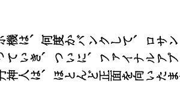

〜2015年3月中旬〜
ドキュメントを見るとRuby 2.1ではby:とかto:でも指定できるようになっている。
順番も気にしなくっていいわけだ。
実はそれ以外にも使い方があって、なんと省略も可能なのだ。
loop{|i|}でiがインクリメントされないかなあなんて妄想したことがあるが、
0.step{|i|}と書ける。無限に続く。
% ruby -ve 'p 0.step'
ruby 2.1.2p95 (2014-05-08) [i386-linux-gnu]
#<Enumerator: 0:step>
% ruby -e '0.step{|i|break if i > 8; p i}'
0
1
2
3
4
5
6
7
8
by:を使えば偶数だけのstepも可能になる。
% ruby -e '0.step(by:2){|i|break if i > 8; p i}'
0
2
4
6
8
ちゃんとOFSを設定しないと、$1とかいじっちゃうと再構成されて区切りがOFSになってしまう。
OFSのデフォルトは空白1個なのでタブ区切りが空白区切りになる。
% printf "a\tb\tc\n" | cat -A a^Ib^Ic$ % printf "a\tb\tc\n" | awk '$1=$1' | cat -A a b c$ % printf "a\tb\tc\n" | awk '$1=$1' OFS='\t' | cat -A a^Ib^Ic$
入力に空フィールドがある場合を考えるとFSも'\t'にする必要がある。
% printf "a\tb\t\tc\n" | awk '$1=$1' OFS='\t' | cat -A a^Ib^Ic$ % printf "a\tb\t\tc\n" | awk -F'\t' '$1=$1' OFS='\t' | cat -A a^Ib^I^Ic$
ここで-FとOFSがなんかしっくりこないのでそろえてみる。
% printf "a\tb\t\tc\n" | awk '$1=$1' FS='\t' OFS='\t' | cat -A a^Ib^I^Ic$
どうせならと
% printf "a\tb\t\tc\n" | awk '$1=$1' FS=OFS='\t' | cat -A a^Ib^I^Ic$
とまとめてなんかよさげな感じだが、実はこれ、
FSには"OFS=\t"が設定されるので、全然だめだめなのだ。
% printf "a\tb\t\tc\n" | awk '{print FS}' FS=OFS='\t' | cat -A
OFS=^I$
まとめたければBEGINで書くしかない。
% printf "a\tb\t\tc\n" | awk 'BEGIN{FS=OFS="\t"}{print FS}' | cat -A
^I$
xargsで並列実行させると表示が混ざってしまうことがある。
% time seq 20 | xargs -P10 -n1 -I{} ruby -e 'puts "a"*20+"{}"'
aaaaaaaaaaaaaaaaaaaa4
aaaaaaaaaaaaaaaaaaaa10
aaaaaaaaaaaaaaaaaaaa11
aaaaaaaaaaaaaaaaaaaa9aaaaaaaaaaaaaaaaaaaa8
aaaaaaaaaaaaaaaaaaaa5
aaaaaaaaaaaaaaaaaaaa7
aaaaaaaaaaaaaaaaaaaa2aaaaaaaaaaaaaaaaaaaa3aaaaaaaaaaaaaaaaaaaa1
aaaaaaaaaaaaaaaaaaaa6
aaaaaaaaaaaaaaaaaaaa12
aaaaaaaaaaaaaaaaaaaa13
aaaaaaaaaaaaaaaaaaaa16
aaaaaaaaaaaaaaaaaaaa17
aaaaaaaaaaaaaaaaaaaa14
aaaaaaaaaaaaaaaaaaaa15
aaaaaaaaaaaaaaaaaaaa20
aaaaaaaaaaaaaaaaaaaa18
aaaaaaaaaaaaaaaaaaaa19
seq 20 0.00s user 0.00s system 77% cpu 0.002 total
xargs -P10 -n1 -I{} ruby -e 'puts "a"*20+"{}"' 1.46s user 0.10s system 327% cpu 0.475 total
れに対処するにはparallelを使うのが簡単。
% time seq 20 | parallel -j10 -q ruby -e 'puts "a"*20+"{}"'
aaaaaaaaaaaaaaaaaaaa2
aaaaaaaaaaaaaaaaaaaa3
aaaaaaaaaaaaaaaaaaaa4
aaaaaaaaaaaaaaaaaaaa8
aaaaaaaaaaaaaaaaaaaa1
aaaaaaaaaaaaaaaaaaaa5
aaaaaaaaaaaaaaaaaaaa6
aaaaaaaaaaaaaaaaaaaa7
aaaaaaaaaaaaaaaaaaaa9
aaaaaaaaaaaaaaaaaaaa10
aaaaaaaaaaaaaaaaaaaa11
aaaaaaaaaaaaaaaaaaaa12
aaaaaaaaaaaaaaaaaaaa14
aaaaaaaaaaaaaaaaaaaa13
aaaaaaaaaaaaaaaaaaaa16
aaaaaaaaaaaaaaaaaaaa18
aaaaaaaaaaaaaaaaaaaa19
aaaaaaaaaaaaaaaaaaaa15
aaaaaaaaaaaaaaaaaaaa17
aaaaaaaaaaaaaaaaaaaa20
seq 20 0.00s user 0.00s system 67% cpu 0.002 total
parallel -j10 -q ruby -e 'puts "a"*20+"{}"' 1.65s user 0.21s system 264% cpu 0.700 total
ちょっと時間がかかるが、各ジョブ毎にまとめられるので混ざることはない。
--group Group output. Output from each jobs is grouped together and is only printed when the command is
finished. stderr (standard error) first followed by stdout (standard output). This takes some CPU
time. In rare situations GNU parallel takes up lots of CPU time and if it is acceptable that the
outputs from different commands are mixed together, then disabling grouping with -u can speedup GNU
parallel by a factor of 10.
--group is the default. Can be reversed with -u.
この--groupがdefaultになっている。
以前はかなりお世話になった
FriendFeedが4/9で終了するようだ。
facebookに吸収されたのだからいつかはこうなると思っていたが、意外に長かった。
おつかれさま。
wc -l以外の方法。
% seq 100 | sed -n '$='
100
% seq 100 | awk 'END{print NR}'
100
% seq 100 | grep -c '^'
100
特にgrep fooとかした後にwc -lとやりがちだが、-cを覚えておくといい。
朝は忘れたので乗らなかったが、帰りは品川から。
ものすごく空いていた。どこにでも座り放題。
15両編成だったからか？
なんかダイヤ改正と重なって朝はかなり混乱してるようだが、
それより品川からだと行き先がわかりにくい。
常磐線もあるしなあ。
そうか。横浜あたりだと湘南新宿ラインもあるから、
すげーややこしいことになったわけか。
Gmailにいつの間にかあ▼というボタンがついているが、
まさかこれで日本語変換ができるわけないよなと
クリックしてみるとちゃんとできてしまう。
びっくりだよ。
これってGoogle IMEと同じものと考えていいのか？
いや、いきなり候補が出てこないからちょっと違うな。
ON/OFFのキーボードショートカットがないのが痛いかと思ったが、
意外にOFFにすることもないような。
ONのままでもテキストボックス以外はショートカットが効くので。
小文字のアルファベットを入力するときぐらいか。
それ以前にこれを使う機会がない。
なかなか珍しいお知らせをもらった。
出荷検品工程において、一部品質の不良が確認されました。 若干不備のある状態ではございますが、お読みいただける範囲と判断し、 誠に勝手ながら代金無償のサービス品として同梱させていただきました。 上記商品代金につきましては、弊社にてキャンセルの手続きをさせて いただきます。 キャンセル後のご請求金額につきましては、手続きが完了次第、 マイページ/ご注文状況確認欄にてご確認いただけます。 尚、送料無料対象金額でご注文いただいたお客様には、今回のキャンセルに 関わらず、送料無料で送らせていただいております。 本来であれば、事前にお客様にご相談させていただくべきところでは ございますが、ご注文いただいております商品を少しでも早く お届けしたいとの思いから、このような対応をさせていただきました。 何卒、ご容赦いただけます様お願い申し上げます。
どの程度かわからんけど、そのくらいは織り込み済みというか、
読めなくてもしょうがないくらいの覚悟でいるのでどうでもよかったのだが。
むしろそんな商品処分できて一石二鳥とか勘繰ったり。
最近細長い350mlペットボトルを見かけるようになった。
500mlと同じ太さで短めというのが主流だが、
それだと500ml用のペットボトルカバーが使い物にならなくなる。
細長いタイプだと流用できる。
あと陳列する際細いほうがいっぱい並べられる。
このあたりが出てきた理由か？
最初の10ページぐらいまでちょっと赤っぽいシミがついていた。
このくらいなら二値化すれば消える。
Tポイントで全額払ったもんだから、そのままTポイントで返ってきた。なんか面白い。
